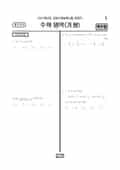

문제지

시험지 만들기준비하고 있어요. 열리면 아래 탭에서 바로 쓸 수 있어요.
2021학년도 대학수학능력시험 · 2020년 11월 시행
2021학년도 수능 수학 가형 1등급컷은 원점수 92점(추정), 표준점수 최고점은 137점입니다.
원점수 1등급컷은 공식 발표값이 아니라 EBSi·입시기관 값입니다. 등급별 값은 등급컷 표, 출처 구분은 데이터 원칙에 있습니다.

정답 변경 없음
이의신청 3문항
시험 전체 관련 보도 4건은 2021학년도 대학수학능력시험 회차 페이지에 모아 두었어요.
발행 기관: 한국교육과정평가원(KICE). 파일 위치: 이 사이트가 보관한 사본. 저작권은 발행 기관에 있습니다. 원본과 다르거나 게시 중단이 필요하면 연락처로 알려 주세요. 등급컷 출처 구분은 데이터 원칙에서 설명합니다.
막대 색은 역대 대비 난이도 · 진한 막대가 이 시험 · 막대를 누르면 그 회차로 이동
가형은 기하가 빠지고 수학Ⅰ·미적분·확률과 통계에서 출제되었습니다. 표준점수 최고점은 137점으로 전년(134점)보다 3점 올랐고, 최고점자는 971명, 1등급 구분 표준점수는 130점이었습니다. EBSi 가채점 응답자 기준으로 오답률 50%를 넘은 문항은 7개였고, 주관식 27~30번이 모두 70%를 넘었습니다. 30번(91.8%), 29번(86.4%), 28번(80.5%), 27번(71.3%) 순입니다.
t = sin²πx는 0 < x < 1에서 0에서 1까지 올랐다가 x = 1/2을 기준으로 대칭으로 다시 0으로 내려갑니다. 그래서 f가 (0, 1) 안에서 t = c일 때 극대이면 g는 x = 1/2 양쪽에서 한 번씩, 모두 두 번 극대가 됩니다. 극대가 3개가 되려면 나머지 하나는 x = 1/2(t = 1)에서 나와야 하고, f가 t = 1 쪽으로 증가해야 합니다. 극댓값이 모두 같고 최댓값이 1/2이므로 f(c) = f(1) = 1/2이고, 최고차항의 계수가 1이니 f(t) = (t − c)²(t − 1) + 1/2로 쓸 수 있습니다.
g의 값의 범위는 [0, 1]에서 f가 갖는 값과 같습니다. 극솟값 1/2 − 4(1 − c)³/27을 0으로 두면 c가 음수가 되어 맞지 않으므로, 최솟값 0은 f(0) = 1/2 − c²에서 나옵니다. c = 1/√2이고, f(2) = (2 − 1/√2)² + 1/2 = 5 − 2√2이므로 a = 5, b = −2, 답은 25 + 4 = 29입니다.
A가 검은색 6개를 모두 가져가면 검은색이 흰색보다 많은 학생이 A 하나뿐이라 조건 (다)를 만족할 수 없습니다. 따라서 A의 검은색은 4개 또는 5개이고, 남은 검은색 2개나 1개를 받은 학생 가운데 정확히 한 명만 검은색이 흰색보다 많아야 합니다. 모든 학생이 모자를 하나 이상 받는다는 조건까지 넣어 세면 A가 4개일 때 156가지, 5개일 때 45가지로 모두 201가지입니다.
28번은 함수와 그 역함수의 합성함수가 실수 전체에서 미분가능하다는 조건으로 두 상수를 정하는 문항으로, 답은 72입니다. 27번은 두 로그의 값이 정해진 범위의 자연수가 되도록 하는 자연수의 개수를 세는 문항이며, 답은 13입니다.